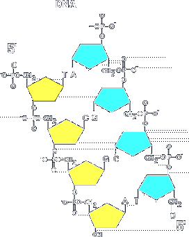
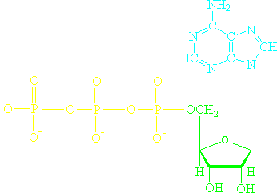

Synthetic oligonucleotides have a clean 5’ hydroxyl
5’ phosphates are required for ligation

Kinases and phosphatases add or remove the 5’ phosphate. DNAs that are the products of endonucleases have a single 5’ phosphate. Synthetic oligonucleotides have a clean 5’ hydroxyl. Molecular biology protocols often require ligase which requires 5’ phosphates. Sometimes it is useful to make a DNA available or not available for ligation, and this phosphorylation state can be changed with kinases and phosphatases. Additionally, some exonucleases require a 5’ phosphate and thus the degradability of a DNA can be altered by these enzymes.
Section divider: Kinases and Phosphatases, with a DNA backbone diagram marking the 5-prime phosphate that these enzymes add and remove.
Alkaline Phosphatases
Catalyze the hydrolysis of phosphate esters non-specifically
Also act on 5’ mono-, di- and triphosphates of RNA or DNA, dNTPs, and NTPs
There are very many of them in nature, often secreted proteins
The most commonly used class of phosphatases are the alkaline phosphatases. They catalyze the hydrolysis of phosphate esters non-specifically. So, these enzymes are used outside the context of DNA manipulation. For example, you can react an alkaline phosphatase with p-nitrophenyl phosphate and release a yellow pigment that can be detected photometrically. The enzyme will act on any exposed nucleic acid phosphate such as the 5’ ends of nucleotides or polynucleotides. These enzymes are very common in nature, from both prokaryotic and animal sources.
Alkaline phosphatases hydrolyse phosphate esters non-specifically, illustrated by the p-nitrophenyl phosphate assay that releases a yellow product.
Three alkaline phosphatases
CIP: Calf Intestine Alkaline Phosphatase
Oldest and most commonly used since it is very robust and cheap
Often used to prevent re-closure of the ends of a vector digested with restriction enzymes
Can also be used to destroy dNTPs in a reaction mixture
Shrimp Alkaline Phosphatase (SAP)
Can be easily heat-killed
Used for exo-SAP sequencing
Antarctic Phosphatase
A lot like SAP
Claimed to be even more heat-killable
The oldest, cheapest, and most well-known enzyme is calf intestine alkaline phosphatase, or CIP. The name means what it implies — it is a phosphatase originally isolated from calf intestine. It is often used to prevent re-closure of ends of a vector digested with restriction enzymes. It can also be used to destroy dNTPs in a reaction mixture. Shrimp Alkaline Phosphatase can be easily heat-killed but is otherwise the same as CIP. One useful protocol for automating sample generation for cycle sequencing is called Exo-SAP, where you degrade the unreacted primers and dNTPs of a PCR reaction by digestion with SAP and Exonuclease I. Antarctic phosphatase is a newer version of the heat-killable alkaline phosphatase, which is claimed to be even more heat-labile.
Three alkaline phosphatases revealed one at a time: CIP, Shrimp Alkaline Phosphatase, and Antarctic Phosphatase.
T4 Polynucleotide Kinase (PNK)
Transfers a single phosphate onto the 5’ hydroxyl of an RNA or DNA
Uses the gamma phosphate of ATP as a phosphate source
Used on synthetic oligonucleotides so that they can be substrates for ligase
Not efficient on double-stranded DNAs
Also used for radioactive labeling of DNAs or RNAs using [gamma-32P] ATP

T4 polynucleotide kinase transfers a single phosphate to the 5’ hydroxyl of an RNA or DNA from ATP. It is the gamma phosphate of ATP, the terminal one, that gets transferred. The enzyme is most commonly used to phosphorylate synthetic oligonucleotides so that they can be substrates for ligase. It works best on single stranded DNAs, and it is often used to radiolabel DNAs using [gamma-32-P] ATP.
T4 PNK transfers the terminal gamma phosphate of ATP onto a 5-prime hydroxyl, shown beside the structure of ATP.
Where is the phosphate… being added by T4 PNK?
It adds phosphates to 5’ ends of a DNA. This diagram doesn’t actually show this — it implies that this 5’ O is attached to another nucleotide. If this was the end of the molecule, and it were an H attached, then this would be a 5’-OH and would be phosphorylated. Note that when we cut a DNA with a nuclease, we are breaking the bond between the 3’-OH and the 5’-phosphate. The resulting state of the newly generated 5’ end is thus a 5’-phosphate, not a 5’-OH. Thus it is in the state that would result from treatment of a naked 5’-OH with PNK. Often what you use PNK for is to phosphorylate oligos such that their end is 5’-phosphate. It needs that to undergo ligation.
The backbone structure again. The phosphate PNK adds sits on the 5-prime oxygen — but only where that oxygen carries a free hydroxyl at the end of the molecule, which this internal view does not show.